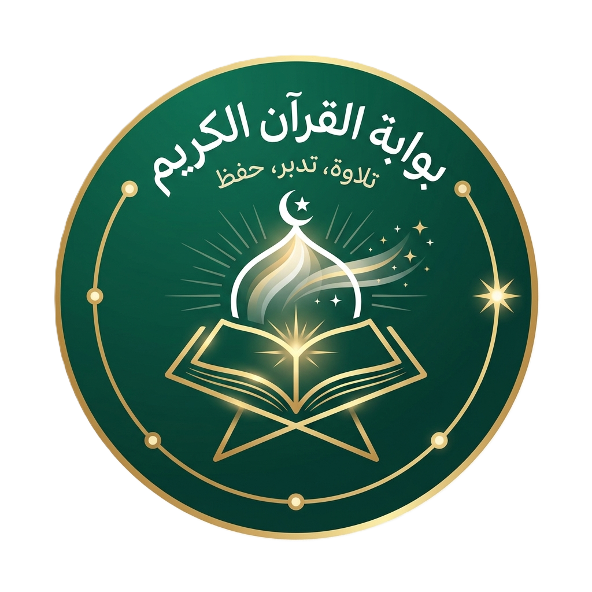

لا يوجد اتصال بالإنترنت الآن
الوضع غير المتصل مفعل
يمكنك العودة للمحتوى المتاح محليًا فور رجوع الشبكة. إذا استمر الانقطاع، جرّب إعادة المحاولة بعد قليل.

يمكنك العودة للمحتوى المتاح محليًا فور رجوع الشبكة. إذا استمر الانقطاع، جرّب إعادة المحاولة بعد قليل.